Grid presentation (try resizing the window); click an image to view a larger version:
Photos are from the National Geographic Photo Contest 2012, published on TheAtlantic.com; part 1, and part 2.
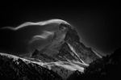
The Matterhorn: Night Clouds #2 -- The Matterhorn, 4478 m, at full moon. (© Nenad Saljic/National Geographic
Photo Contest)
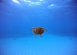
Swimming with a Turtle: After observing this turtle, I swam with him for a few minutes. (© John Peterson/National
Geographic Photo Contest)
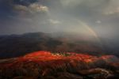
Red Land: Sunset Cloud Village is one of the most picturesque places in Red Land, China. As its name indicates,
it's best to see before sunset. The reddish brown soil turns redder after rainfall and after farmers plow the land. (©
Peng Jiang/National Geographic Photo Contest)
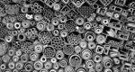
The Location: The iron and steel bars are located in their correct position. Perhaps it is not deliberately made
by somebody, but naturally positioned unknowingly by the shop owner over time. (© Noh Keun Park/National Geographic
Photo Contest)
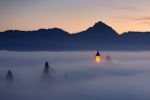
Piece of Heaven: Jamnik, small village in Slovenia. One morning in in autumn, fog was just at the right height at
the right time. The atmosphere was heavenly, unforgettable. (© Janez Tolar/National Geographic Photo Contest)
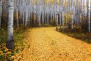
Golden Road: A glorious road of gold through the aspen woods of Snowmass, Colorado. (© Ron Azevedo/National
Geographic Photo Contest)
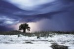
Lightnng Storm: The coast in the midst of a storm. (© Anna Ross/National Geographic Photo Contest)
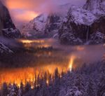
Yosemite Valley at Dusk: A mist had settled over Yosemite Valley, as automobiles passed through, headlights illuminated
the fog. (© Phil Hawkins/National Geographic Photo Contest)
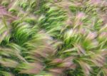
Wind Swept Foxtail Barley: My wife and I traveled by RV to Alaska during July and August 2012 to celebrate our 50th
wedding anniversary. To define the natural beauty there one word comes to mind - "Majestic". An awesome trip with thousands
of images. This image in particular stood out from all the rest. We spent about a week in Chicken, Alaska where the foxtail
barley was growing everywhere. I must have taken 50 images of the barley but this one best conveyed the wave and flowing
nature of the subject and the simple beauty I experienced while photographing them. (© Jim Cottingham/National Geographic
Photo Contest)
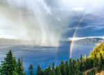
Crater Lake Storm at Sunset: A thunderstorm swirls across the water at Crater Lake National Park, as the setting
sun creates a rare double rainbow. Taken from Rim Village, approximately 1,000 feet above the lake's surface, providing
a straight-on vantage point of the storm. (© Duke Miller/National Geographic Photo Contest)
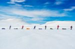
Expedition Amundsen: A race that follows in the path of the famous explorer Roald Amundsen brings the contestants
to the Hardangervidda Mountainplateu, Norway. 100km across the plateau, the exact same route Amundsen used to prepare for
his South Pole expedition in 1911 is still used by explorers today. Amundsen did not manage to cross the plateau and had
to turn back because of bad weather. He allegedly said that the attempt to cross Hardangervidda was just as dangerous and
hard as the conquering of the South Pole. The group in the picture used the race as preparations for an attempt to cross
Greenland. (© Kai-Otto Melau/National Geographic Photo Contest)
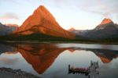
Sunrise in Glacier: I took this from the balcony of Many Glacier Lodge in Glacier National Park, on August 1, 2012.
The sun was rising behind me and onto the mountains. (© Sharon Lyon/National Geographic Photo Contest)
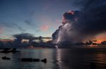
Lightning Sunset: Thunderstorms in the Florida Keys are often sporadic, short-lived, and incredibly isolated. This
photo shows a small cluster of storm clouds that had blown in during a sunset on an otherwise clear day. (© Judy Jinn/National
Geographic Photo Contest)